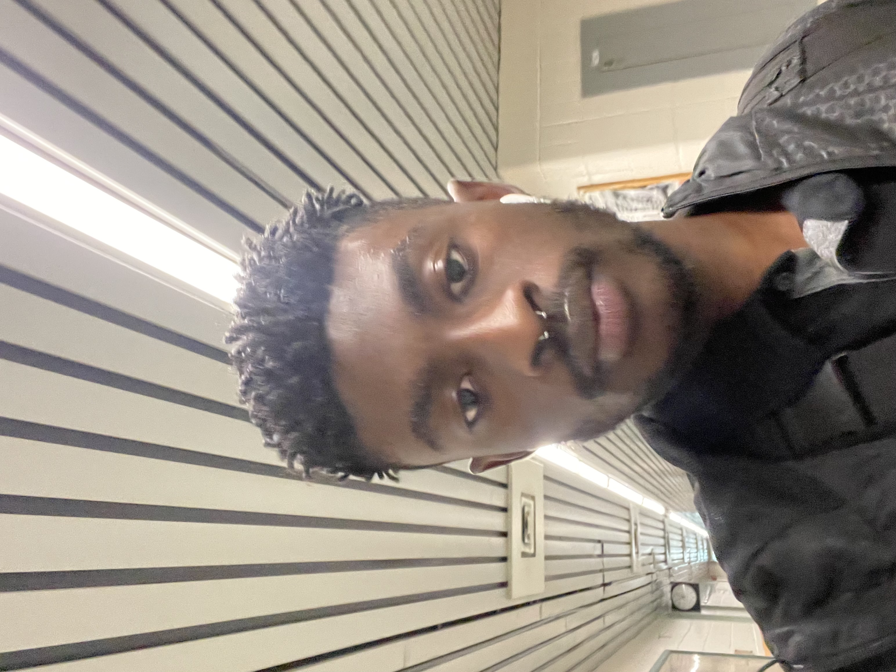
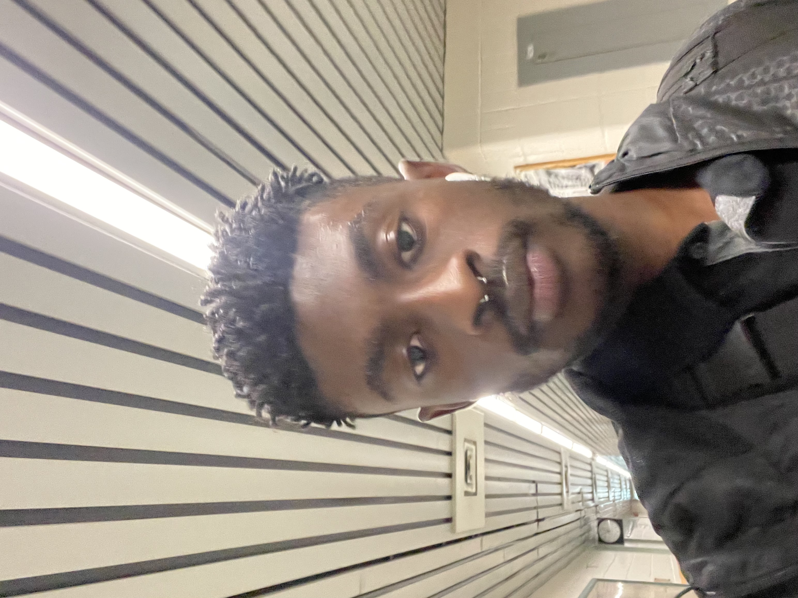

|

|
|---|
| About | Projects | Experience | Photography | Music | Social |
|---|
|

|
|---|
On November 19th, 2022, I participated in a team design competition. My team name was EGOW (an abbreviation of teammate names: Elijah, Godfred, Obi and Wesley) and our task was to design a device that allows organizations to safely lower items vertically as a response to workplace hazards of falling items.
Given the limited resources and design constraints, team EGOW's final design was a makeshift pulley with a bucket container that managed to safely lower 5 eggs from a desk height to the ground
As a fun project, I programmed a compiler terminal version of the New York Times WORDLE game. WORDLE is a popular word game that takes 6 attempts to figure out what the 5-letter word is. Here's a video demonstrating how it works in a compiler terminal:
During the Fall 2022 semester, I had the privilege to participate in the IEEE Xtreme coding competition.In teams, the task was to complete as many real-world scenario code problems of varying complexity within 24 hours.
My Team, Team WES, placed 2000 / 7000 in Canada! Pretty good for the first time, right?! I plan to participate again next year with a bigger team (not just me, lol) and better preparation!
During the fall semester of my first year, I undertook a python coding project to build a simulation of Train crossing traffic. I built this simulation using various sensors and components from an Arduino Grove Kit, including a touch sensor, buttons and LEDs. In my code, I included libraries for Arduino functions that allow me to manipulate my input sensors and outputs.
This was a fun and educative project that exhibited my creativity and passion for building technological solutions
During the Spring 2022 semester, I worked as a Junoir IT Technician at the Engineering Computing Services for the MUN Engineering Faculty. Some of my responsibilities included: